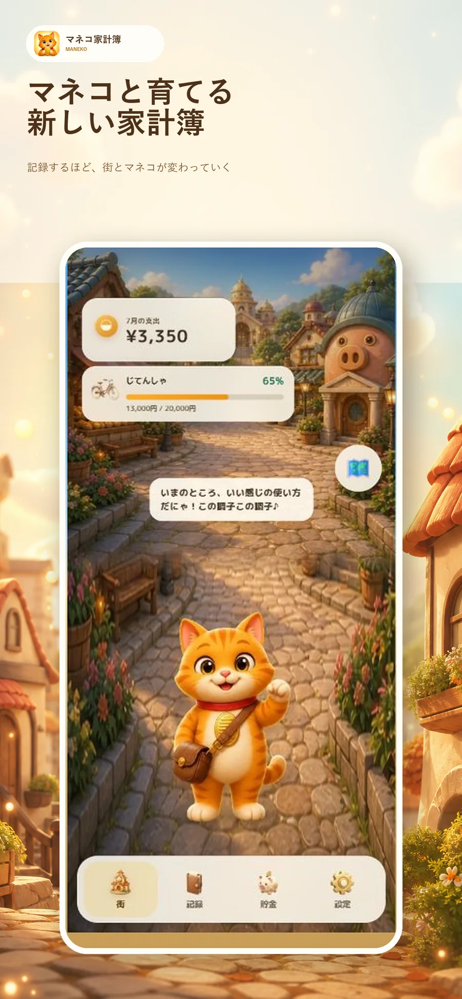
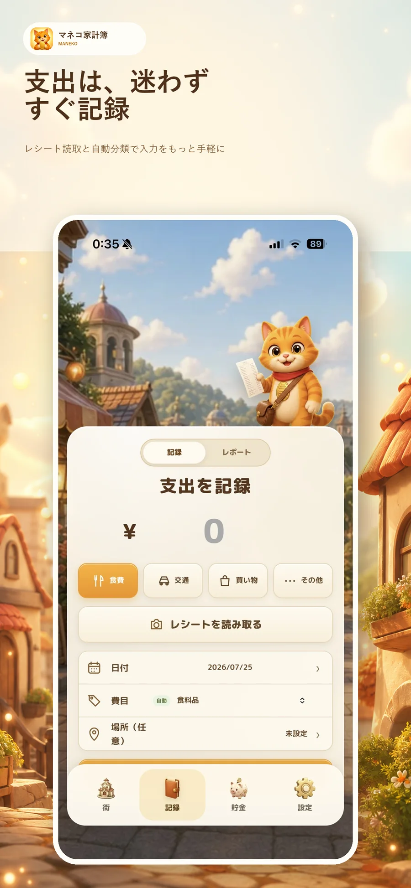
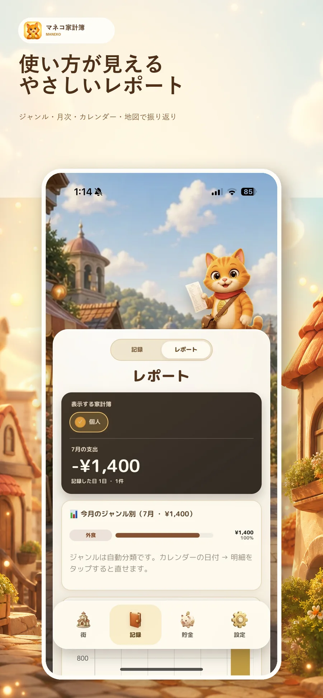
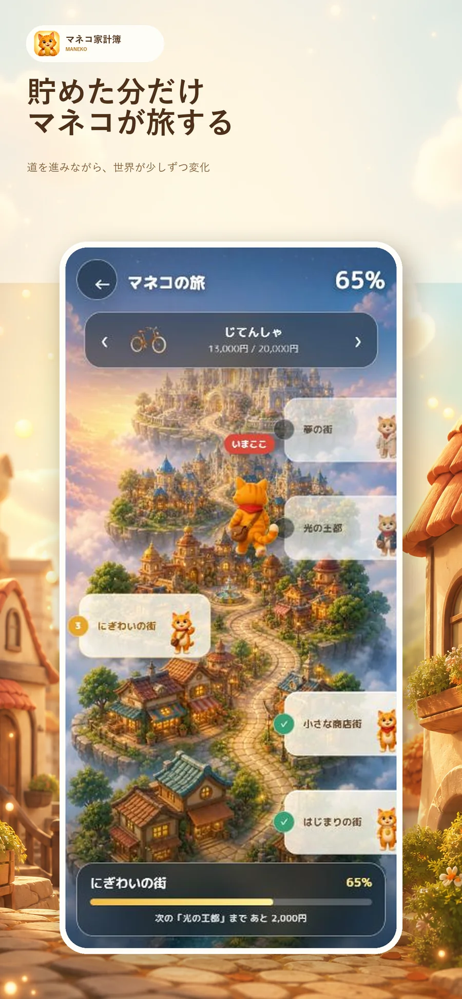
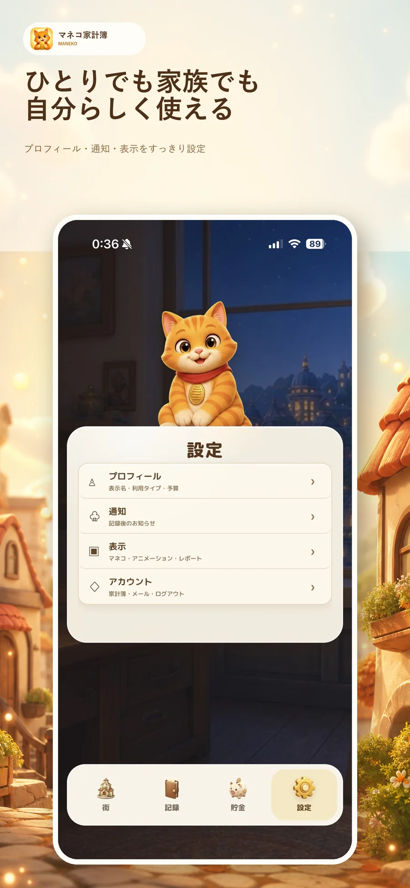

Product story · 2026
記録するほど、
マネコと街が育っていく。
「家計簿は必要だけど、記録だけでは続かない」。その問題を、貯金目標と3Dの街、 そして相棒のマネコで解こうとしたiOSアプリです。

1. テーマと、作ろうと思った理由
この制作のテーマは、「お金の記録を、続けたくなる体験へ変えること」です。 家計簿は生活に必要ですが、数字を入力してグラフを見るだけでは、記録そのものが負担になりやすいと感じていました。 そこで、支出を記録したり目標へ貯金したりする行動が、3Dの街の成長やマネコの旅として目に見えるアプリを考えました。
最初に作っていたのは、旅行やイベントごとに支出をまとめ、レシートの明細を参加者へ割り当てる 「TabiWari」でした。写真や場所を残し、あとで旅を振り返れるアプリです。
ただ、作り込むほど一つの疑問が大きくなりました。旅行のときだけ使うアプリは、 日常では開かれない。せっかく作るなら、もっと普段の生活で役に立つものにしたい。
「旅行の記録」を中心にするのではなく、毎日のお金との付き合い方を少し楽しくする。 ここから、家計簿そのものを作り直しました。
日常家計簿、複数人で使う共有スペース、親子のおこづかい管理へ拡張しながら、 画面も2Dの試作から3Dの「マネコタウン」へ全面的に変更しました。
自分自身も、家計簿は「入力しなければならないもの」になると続きませんでした。 だからこそ、正しさや機能数だけでなく、アプリを開いたときに少し気分が上がり、 次の街を見たいからもう一度記録したくなることを目標にしました。
2. 設計と、自分なりにこだわった点
対象は、小学校高学年くらいから高校生、そして大人まで。 子ども向けに言葉を幼くしすぎず、大人向けに数字だけの無機質な画面にもしない。 年齢をまたいで使える一つの体験を目指しました。
一番こだわったのは、要望をそのまま全部足すのではなく、「機能を増やしすぎない」ことです。 記録・把握・貯金という中心から離れる機能は、作れても最初のリリースでは表示しない判断をしました。 例えば買い物マップは実装途中まで進めましたが、記録画面が複雑になるため公開版ではいったん外しています。
記録は短く
手入力に加え、レシートから商品名と費目を読み取り、あとから直せるようにする。
貯金を変化にする
目標へ貯めた割合が、街並みとマネコの旅として目に見える。
共有は必要なときだけ
個人利用を基本にし、夫婦・カップル・家族の家計簿をあとから追加できる。
自分の領域を守る
親子連携しても、親と子の個人家計簿は自動で公開しない。
記録する。把握する。貯める。変化を楽しむ。
3. サービスの説明 — 現在のマネコ家計簿
以前は「こどもモード」と「おとなモード」を分けていました。現在はその分け方をやめ、 マネコタウンの世界観へ統一しています。背景全体を3Dの街にし、その上に必要な情報だけをカードで重ねました。
Town
ホームは、家計簿ではなく「街」
今月の支出と、あと使える金額、現在の貯金目標をすぐ確認できます。 風景をタップするとカードを隠し、町並みとマネコだけを眺められます。


レシート読取、商品別の費目、自動分類
複数目標の作成・編集・切り替え
レシートを、合計金額だけで終わらせない
レシートを読み取ると、複数の商品名と金額を取り込み、商品ごとに食費・日用品などの費目を自動で割り振ります。 間違っていれば、その場でプルダウンから変更できます。手入力でも商品名を残せます。
支出だけでなく収入も記録でき、現在の財布残高をレポートの先頭に表示します。 カレンダーでは収入にプラス、支出にマイナスを付け、日付から記録の編集・削除へ戻れます。

費目、月次、カレンダーで振り返る

貯めた分だけ道を進み、世界が変わる
貯金を「数字」から「旅」へ
目標額に対する貯金の割合に合わせ、町は少しずつ賑やかになります。 旅の画面では、マネコが道に沿って次の街へ進みます。目標が複数あるときは横スワイプで切り替えられます。
衣装を選ぶと、どの街でもその服を着たマネコが登場します。春夏秋冬の衣装は、 帽子や服を無理に重ねるのではなく、衣装を着たマネコ全体を一枚ずつ作り込みました。
4. ひとりでも、夫婦でも、家族でも
一つのアカウントで、個人用・夫婦用・家族用など複数の家計簿スペースを持てます。 一つの支出を複数スペースへ同時に保存したり、レポートで複数スペースをまとめて見たりできます。
共有家計簿では「誰が払ったか」を記録します。一方で「誰が入力したか」は前面に出しません。 必要なのは、入力者を監視することではなく、お金の流れを一緒に把握することだと考えたからです。
親子連携は、共有家計簿とは別に設計
親は招待URLを発行し、おこづかいを送ったり、お手伝いとポイントを設定したりできます。 子どもは用意されたお手伝いから選んで申請し、親が承認します。
ただし、親子でつながっただけでは、子どもの個人家計簿を親へ自動公開しません。 「家族で使う」と「自分のお金を管理する」を分けることは、現在の重要な設計方針です。
5. 登録しなくても、まず始められる
最初はメールアドレスもパスワードも不要です。「登録せずに試す」から、個人家計簿とマネコタウンをすぐ始められます。
共有機能や別端末での利用が必要になったら、その時点でメールアドレス、表示名、パスワードを登録します。 ゲスト時代と同じ内部ユーザーを正式アカウントへ切り替えるため、記録・目標・購入情報はそのまま残ります。

6. Webアプリから、App Storeへ
画面とAPIはTypeScript、Express、PostgreSQLで作り、Vercelで配信しています。 iOSアプリはExpoのWebViewを土台にしながら、App Store課金、Deep Link、Google Mapsなど、 ネイティブで必要な部分だけを橋渡ししました。
課金はレシート読取回数を増やす「マネコプラス」と家族プラン、 買い切りの目標アイコン・季節衣装を用意しています。 無料でも体験の中心は使え、必要な人が拡張できる形です。
App Store提出では、iPhoneとiPadのスクリーンショット、プライバシー申告、 購入の復元、利用規約、審査用アカウントまで一つずつ整備しました。 一度は利用規約リンク不足で自動却下されましたが、原因を直して再提出し、公開まで進めました。
7. 難しかったこと・学んだこと
「動く」と「使いやすい」は別だった
下部タブがsafe areaに隠れる、背景の上に古い台紙が残る、貯金画面がスクロールできない、 画像の切り抜きに別のアイコンが混ざる。実機で初めて見つかる問題が何度もありました。
特に、AIが「実装できた」と判断しても、実際に触ると押されたのか分からなかったり、 保存中に画面が止まって見えたりします。着せ替えも、選ぶたび保存する実装から、 画面内では即座に試し、移動するときだけ保存する操作へ変えました。
難しかったのは、一つの不具合を直すと別の画面で余白やタブ位置が崩れることでした。 Web版だけを見て判断せず、Expo Goと実機のスクリーンショットで確認し、 「押した直後に反応が返るか」「保存が終わるまで状態が分かるか」まで確かめるようにしました。 コードがエラーなく動くことと、利用者が安心して操作できることは別だと実感しました。
デザインは、部分ではなく画面全体で確認する
マネコ、カード、背景、タブを別々に見ると成立していても、一つのiPhone画面へ置くと崩れる。 そのため、Expo Goと実機スクリーンショットを基準に、余白、重なり、スクロール、タップ領域を調整しました。
方向転換では、既存ユーザーを置き去りにしない
認証方式や画面構成を変えても、すでに使っている人の記録を消さないことが最優先です。 ゲストから正式登録へ切り替えても同じIDを維持する設計は、その反省から生まれました。
AIに任せきらず、自分で判断する
AIは実装や案出しを速くしてくれましたが、どの機能を残すか、誰のための画面か、 本当に使いやすいかは自分で決める必要がありました。生成された画像もそのまま使わず、 アイコンの切れや衣装の不自然さを実機で確認して作り直しています。 AIから出てきた答えを完成品と考えず、試して、違和感を言葉にして、直すことが自分の役割だと学びました。
感想 — 完成・公開して感じたこと
最初は授業課題として始めた小さなWebアプリが、独自ドメインやメール認証、課金、 App Store審査まで必要なサービスへ育ったことに、自分でも驚いています。 一方で、公開した瞬間に完成するのではなく、実際の利用者が見つけた不具合を直して初めて サービスになっていくことも感じました。作る技術だけでなく、使い続けてもらう責任まで含めて プロダクト開発なのだと思います。
8. 現在地と、これから
マネコ家計簿はApp Storeへ公開できました。ただ、公開は完成ではなく、 実際に使ってもらいながら「本当に中心にする体験は何か」をもう一度考える段階だと思っています。
親子の金融教育を中心にするのか、個人の貯金習慣を中心にするのか。 家族共有を最初から見せるのか、必要になってから出すのか。 これからも機能を増やす前に、マネコがいるから記録と貯金を続けられる、という核を磨いていきます。
作ったというより、使いながら育て続けているアプリです。
Available on iPhone & iPad
マネコと、今日から始める。
個人利用は登録なしでも試せます。